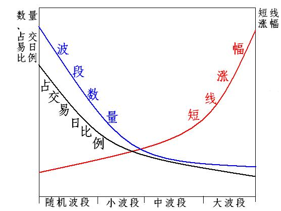

第115篇•教你炒股系列27：选股的原则（1）
谷为陵
本文是接着前面的《关于选股问题的解答》而写的，只是因选股原则非常重要，于是就特意拟定了一个新标题。
投资股票是为了获得股价差价收益，股价差价是通过低买高卖的操作获得的。而低买高卖，一定是在股价上涨的过程中完成的。所以，选中能够上涨的股票，是实现低买高卖，并最终获得差价收益的基础。
从股价短期上涨的幅度来看，股价上涨波段可分为4种类型：一是大波段，股价涨幅在2～3倍以上；二是中波段，股价涨幅在1～2倍；三是小波段，股价涨幅在50%～100%；四是随机波段，股价涨幅在50%以内。
以上4种波段的短线涨幅、数量以及所占交易日比例，存在如下相互关系图：

从短线操作成功概率来看，越是短期涨幅大、数量多、占交易日比例高的波段，短线操作成功的概率越大；越是短期涨幅小、数量少、占交易日比例低的波段，短线操作成功的概率越小。
但以上波段的涨幅、数量以及占交易日比例的排序规律却形成了相互矛盾。比如，大波段涨幅大，但其波段数量少、占交易日比例低，一只股票也许需要好几年甚至更长的时间才会出现一轮大波段上涨行情，难以抓住。再如，随机波段数量多，很容易碰到，但其涨幅小，难以形成盈利操作。
由于一个波段在其形成的初期还难以辨别其后到底会发展成怎样的波段类型，所以，短线交易者只好对所有初级波段进行追踪和操作，因随机波段和小波段数量和所占交易日多，因此，不可避免地，短线交易者的大部分交易都会落在随机波段和小波段之中，而这两个波段的操作成功概率不高，这使得短线交易者在大部分时间里的操作收益率并不高。只有在牛市主升浪期间，因股市整体性上涨而产生了波段的放大效应，能够将随机波段放大为小波段，将小波段放大为中波段，而中波段放大为大波段，使得短线交易者能够很轻易抓住一个小波段和中波段的操作机会，极大地提高了其操作成功率和收益率。
为了提高短线操作的成功率，只有两个办法：一是赶上牛市主升浪，二是精心选股，尽量选择股票的中大上涨波段（主升浪）作为操作对象。而股票的中大波段主要存在于两类股票之中：一是长期大牛股，其主升浪涨幅大、周期长，在其主升浪之中存在极多的操作机会；二是处于中期或者长期底部的未来短中期牛股，一旦这些股票股价脱离底部，就会出现一轮中大波段的上涨行情。
所以，选股的原则就是：一是选择长期大牛股，二是选择处于中长期底部的未来短中期牛股。而这些都需要对股票价值进行深入的分析。
（未完待续）